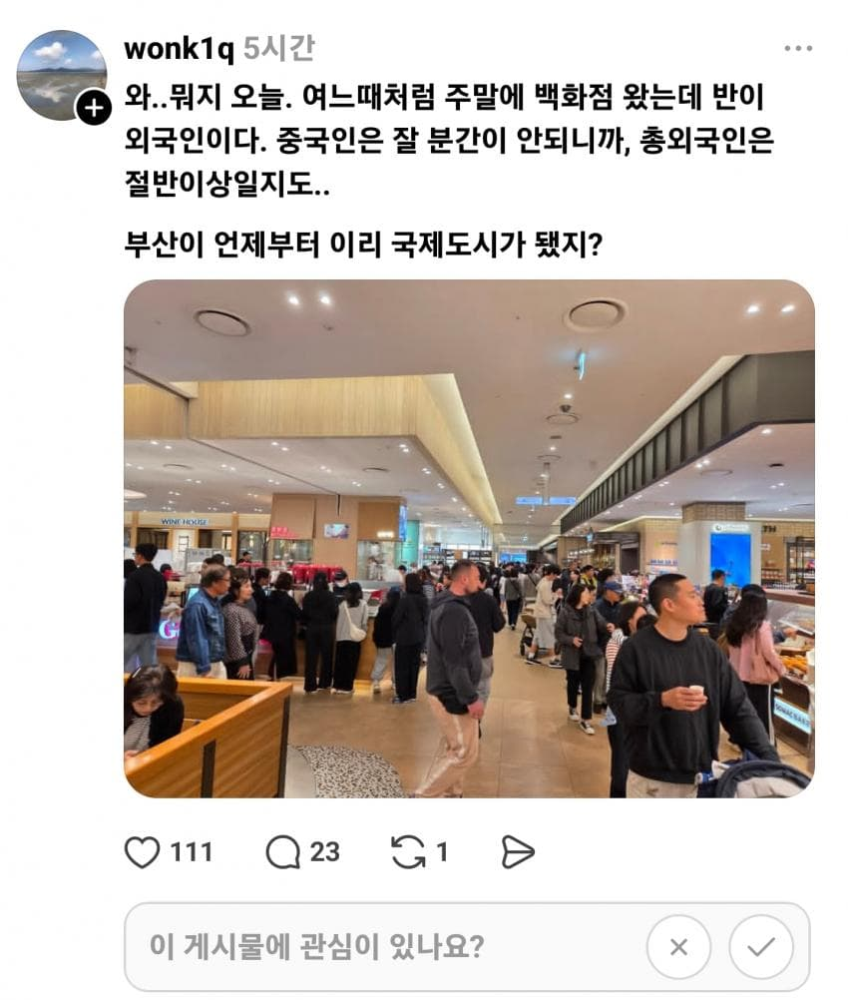

요즘 부산백화점 근황
댓글
아니 난, 북구쪽에 관광지도없는 동네장사인데 요즘 이동네에 올리가 없다 생각한 외국인이 온다..ㄷ
나 영어 못한다고.ㅠㅠ
ai도움이라도 받자. 물들어올때 노 저어야지
정국 학교 구경하러 간다던데ㅋㅋ
광주광역시 살고있는데 부산은 진짜 국제도시더라, 광주는 외국이라고 해봤자 진짜 일하러 오신분들 밖에 없는데 부산가니까 완전 서울과다른 진짜 국제도시더라, 외국인이 엄청 많은데 각 나라에서온 다채로운 외국인들이 관광을 하러엄청 많이옴.
부산만큼은 아니지만 강릉도 외국인 꽤 많더라
부산은 어딜가든 ㄹㅇ 외국인이고
남포동은 옛날부터 외국인이 엄청 많았음
해운대에 청사포랑 미포가면 체감상 외국인 90퍼임
부산 국제도시 관광도시 됐다고 작년부터 졸라 뉴스뜨지않았냐
외국인들 부산 많이간다고
트위터도보면 일본애들 부산많이온다드라
집구석에서 뉴스를 안보고 쓰레드만 보나 ㄷㄷㄷ
원래 외국인들이 관광/쇼핑 다니던 루트들이 정해져있었는데
뭐야 여길 왜 싶은곳 까지 바글바글함 자기들의 여행 커뮤니티 같은걸로 정보 공유 하는건지, 한국 블로그 SNS 같은게 번역이 잘되는건지
서울에서 울산 출장가는데 KTX잡기 매우 어려워짐. 타보면 외국인 관광객 엄청 많음
서울은 꽤 오래됨.
명동 백화점 걍 중국인 점령임
전포도 꽤많아짐